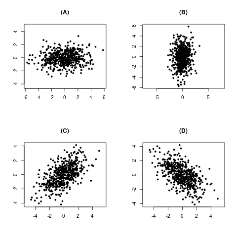

$\newcommand{\v}[1]{\boldsymbol{#1}}$
$\newcommand{\k}[1]{\chi^2_{(#1)}}$
$\newcommand{\cov}{\mathrm{cov}}$
$\newcommand{\cor}{\mathrm{corr}}$
Expectation and variance of random vectors
We know that if $X_1,...,X_n$ are jointly distributed random variables, then $\v X=(X_1,...,X_n)'$
is called a random vector, and is usually considered as an $n\times 1$ column vector. We define
$E(\v X)$ as
$$E(\v X) = \left[\begin{array}{ccccccccccc}E(X_1)\\\vdots\\E(X_n)
\end{array}\right].$$
The case of dispersion is slightly trickier. We shall start with the definition and provide the motivation later.
One simple motivation behind this definition comes from the definitions of variance and covariance:
$$V(X) = E(X-E(X))^2\mbox{ and } \cov(X,Y) = E(X-E(X))(Y-E(Y)).$$
If we mimick this definition as follows in the multivariate case, we get the definition of covariance matrix:
$$V(\v X) = E\big[(\v X-E(\v X))(\v X-E(\v X))'\big].$$
The following example demonstrates this in the 2D case.
EXAMPLE 1:
Let $\v X = \left[\begin{array}{ccccccccccc}X_1\\X_2
\end{array}\right].$ Then
$$\v X-E(\v X) = \left[\begin{array}{ccccccccccc}X_1-E(X_1)\\X_2-E(X_2)
\end{array}\right].$$
So
$$\begin{eqnarray*}
& & (\v X-E(\v X))(\v X-E(\v X))'\\
& = & \left[\begin{array}{ccccccccccc}X_1-E(X_1)\\X_2-E(X_2)
\end{array}\right]\left[\begin{array}{ccccccccccc}X_1-E(X_1) & X_2-E(X_2)
\end{array}\right] \\
& = & \left[\begin{array}{ccccccccccc}(X_1-E(X_1))^2 & (X_1-E(X_1))(X_2-E(X_2))\\
(X_1-E(X_1))(X_2-E(X_2)) & (X_2-E(X_2))^2
\end{array}\right].
\end{eqnarray*}$$
When we take expectation of this matrix (entry by entry), we get the dispersion matrix.
■
The following results should be familiar to you from Probability I.
Proof: Direct application of the definition.[QED]
Proof:
Notice the similarity of this result with usual algebraic multiplication that we learn at school:
$$(ax+by)(cx+dy) = ac\,x^2+(ad+bc)\,xy+bd\, y^2.$$
Thus, covariance plays the role of multiplication (and so $V(X) = \cov(X,X)$ plays the role of squaring). Indeed, that
is how the result is proved:
$$$$\begin{eqnarray*}
\cov(aX+bY,cX+dY)
& = & E\big[ \big(aX+bY- E(aX+bY) \big)\big( cX+dY- E(cX+dY) \big) \big]\\
& = & E\big[ \big( aX+bY- (aE(X)+bE(Y)) \big)\big( cX+dY- (cE(X)+dE(Y)) \big) \big]\\
& = & E\big[ \big( a(X-E(X))+b(Y- E(Y)) \big)\big(c(X-E(X))+d(Y- E(Y)) \big) \big]\\
& = & E\big[ \big( ac(X-E(X))^2+(ad+bc)(X-E(X))(Y- E(Y)) +bd(Y- E(Y))^2 \big) \big]\\
& = & acE(X-E(X))^2+(ad+bc)E(X-E(X))(Y- E(Y)) +bdE(Y- E(Y))^2 \\
& = & ac\,V(X)+(ad+bc)\,\cov(X,Y)+bd\, V(Y),
\end{eqnarray*}$$$$
as required.
[QED]
EXERCISE 1: If $X_1,...,X_n$ are IID with mean 2 and variance 5, and $\v X = (X_1,...,X_n)'$,
then find $E(\v X)$ and $V(\v X).$ Express $E(\v X)$ in terms of $\v
1_n$, the $n\times 1$ vector of all $1$'s. Also express $V(\v X)$ as a
linear combination of
identity matrix $I_n$ and $J_n,$ the $n\times n$ matrix with all entries equal to $1.$
EXERCISE 2: If $X_1\sim Binom\left(10,\frac 13\right)$ and $X_2=10-X_1$ and $\v X = (X_1,X_2)'$
then find $E(\v X)$ and $V(\v X).$
EXERCISE 3: Let $\v X = (X_1,X_2,X_3)'$ have
$$V(\v X) = \left[\begin{array}{ccccccccccc}
3 & 2 & 1\\
2 & 4 & 2\\
1 & 2 & 5
\end{array}\right].$$
Find $\cor(X_1,X_3).$
Hint:
The correlation between two random variables $X$ and $Y$ is defined as
$$\cor(X,Y) = \frac{\cov(X,Y)}{\sqrt{V(X)V(Y)}}.$$
EXERCISE 4: In the last problem, also find $V(X_1-3X_2)$ and $\cov(X_1+X_2,X_3).$
EXERCISE 5: If $X_1,...,X_n$ are iid $Poi(1),$ then find $V(\v X),$ where$\v X = (X_1,...,X_n).$
EXERCISE 6: A fair coin is tossed thrice. Let $X_{ij}$ be the indicator that the $i$-th and
$j$-th tosses show the same outcome. Find the covariance matrix of $(X_{12},X_{23},X_{31}).$
EXERCISE 7: Let $\v X = (U,U^2),$ where $U\sim Unif(-1,1).$ Find $V(\v X).$
The following facts are immediate from the definition.
Proof:
Let $\v Y = A\v X+\v b.$ Then $\v Y = (Y_1,...,Y_m)'$, where $Y_i = \sum_j a_{ij}X_j + b_i.$ Here I have
denoted the $(i,j)$-th entry of $A$ by $a_{ij}.$
Now compute $E(Y_i)$ and $\cov(Y_i,Y_j)$ directly to get the result.
By the way, the $(i,j)$-th entry of $A\Sigma A'$ is $\sum_{r=1}^n\sum_{s=1}^n a_{ir} \sigma_{rs} a_{js}.$
[QED]
EXERCISE 8: If $V(\v X_{n\times 1}) = \Sigma,$ and $\v b$ is a fixed
$n$-dimensional vector, then what will be the dispersion matrix of $\v X+\v b$?
EXERCISE 9: Let $\v X = \left[\begin{array}{ccccccccccc}X_1\\X_2
\end{array}\right].$ If $V(\v X) = \Sigma,$
then find $\cov(X_1+2X_2,3X_1-5X_2)$ in terms of $\Sigma.$
EXERCISE 10: If $V(\v X_{n\times 1}) = \Sigma,$ and $\v a$ and $\v b$ are fixed
$n$-dimensional vectors, then find $\cov(\v a'\v X,\v b' \v X).$
EXERCISE 11: Show that for $\left[\begin{array}{ccccccccccc}a & b\\b & c
\end{array}\right]$ to be a dispersion matrix, a necessary
condition is that $b^2\leq ac.$ Is it a sufficient condition?
EXERCISE 12: Show that $V(\v X)$ is singular if and only if $P(a_1X_1+\cdots+a_n X_n=c)=1$ for
some constants $a_i$'s and $c$ such that not all $a_i$'s are zero.
EXERCISE 13: If $\v X=(X,Y)'$ and $V(\v X)$ is a singular, then how will a scatterplot of
replications from $\v X$ look like? Here we are running the random experiment underlying $\v
X$ repeatedly, and getting $(X_1,Y_1), (X_2,Y_2),...,(X_n,Y_n),$ and plotting these
$n$ points as a scatterplot. Your job is to identify some geometric pattern in the plot.
EXERCISE 14: If $V(\v X_{n\times 1}) = \Sigma,$ and $A_{r\times n}$ and $B_{s\times n}$ are fixed
matrices, then find a $r\times s$ matrix whose $(i,j)$-th entry is the covariance
between the $i$-th entry of $A\v X$ and the $j$-th entry of $B\v X.$
EXERCISE 15: If $V(\v X) = \Sigma,$ and $\v a$ and $\v b$ are fixed
$n$-dimensional vectors, then show that $\v a' \Sigma \v b =\v b' \Sigma \v a.$
Is this true for any symmetric $\Sigma$?
EXERCISE 16: Let $V(\v X)=\Sigma$ be a pd matrix with Cholesky square root $A.$ What is the
dispersion matrix of $(A ^{-1})'\v X$?
A multivariate data set may appear to have different amounts of dispersion depending how you view
it. This 3D scatterplot, for example, will show this phenomenon
when you drag it with a mouse. The
dispersion matrix is a way to take all possible viewpoints into account.
To
motivate the definition of
dispersion matrix consider the
bivariate case. Let the
two components of our random
vector be $X$ and $Y.$ If we take
many iid replications, we get points like $(X_1,Y_1),...,(X_n,Y_n).$ Think of these like a scatterplot.
If we look at this cloud of points from position A, then the points appear more scatterred than when we look from B. This
is an interesting feature of multivariate dispersion, it depends on how you look at it. A good measure of dispersion
should not depend on the direction we are looking from. Rather, it should capture the comprehensive picture,
from which we should be able to work out the dispersion from any desired direction. To achieve
this, imagine a ruler placed on the scatterplot with its 0 mark at the origin.
Parallel rays of
light are shining perpendicularly down on the ruler from both
sides, casting shadows of the points on the ruler:
Light rays (shown in red) are dropping perpendicularly on the ruler
Then each bivariate point reduces to a single number along the scale, and we may compute variance of the numbers to measure
the dispersion when looking from that particular direction.
See this interactive
demo to understand this better.
In the biavariate case, we can quantify the position of the ruler by the angle it makes with the positive $x$-axis.
But
in general ${\mathbb R}^n$ we imagine a unit
vector $\v u$ along the
ruler from its 0 mark (at the origin) reaching up to its 1 mark.
Projecting a typical point perpendicularly on the ruler
Then
a point $\v v \equiv (X,Y)$
will project to the vector
$$\frac{\v u'\v v}{\v u'\v u} \v u = (\v u'\v v)\v u~~(\because \v u'\v u=1),$$
shown in blue. Measured in units of $\v u$, this will show up at the mark $\frac{\v v'\v u}{\v u'\v u}$ of the ruler.
Now, $\v u'\v v = u_1X+u_2Y$ where $\v u = \left[\begin{array}{ccccccccccc}u_1\\u_2
\end{array}\right].$
Then the
variance of $u_1X+u_2Y$
will be $u_1^2 V(X)+u_2^2 V(Y) + 2u_1u_2\, \cov(X,Y),$ which may be written as
$$\left[\begin{array}{ccccccccccc}u_1 & u_2
\end{array}\right]\left[\begin{array}{ccccccccccc}V(X) & \cov(X,Y)\\\cov(X,Y) & V(Y)
\end{array}\right]\left[\begin{array}{ccccccccccc}\u_1\\u_2
\end{array}\right].$$
Here $u_1,u_2$ are controlled by the position of the ruler. Notice that the matrix in the middle does not
involve $u_1,u_2.$ Thus, it contains
information about dispersion for every
possible way of placing the ruler.
This matrix is indeed the dispersion matrix we defined above.
EXERCISE 17: Consider the toy bivariate data set $(1, 2), (3, 4), (2.1, 3.1), (4, 5).$ Draw the
scatterplot. Imagine that we are looking down as shown. Guess the variance as seen from that
direction. Check your guess by actual computation.
EXERCISE 18: Let the dispersion matrix of $(X,Y)$ be $\left[\begin{array}{ccccccccccc}1 & 0\\0 & 2
\end{array}\right]$. Find
$\theta\in [0,\pi)$ such that $V(\cos (\theta) X + \sin(\theta) Y)$ is maximum. When is the variance minimum?
EXERCISE 19: Let the dispersion matrix of $\v X$ be $\left[\begin{array}{ccccccccccc}2 & 0 & 0\\0 & 1 & 0\\0 & 0 & 3
\end{array}\right]$. Find
a unit vector $\v \ell$ such that $V(\v \ell' \v X)$ is minimum. Is this $\v \ell$ unique?
EXERCISE 20: Consider the four scatterplots below.

They correspond to the following covariance matrices (in some order):
$$C_1=\left[\begin{array}{ccccccccccc}2.5 & 1\\1 & 2.5
\end{array}\right], C_2=\left[\begin{array}{ccccccccccc}4 & 0\\0 & 1
\end{array}\right], C_3=\left[\begin{array}{ccccccccccc}2.5 & -1\\-1 & 2.5
\end{array}\right] \mbox{ and
}C_4=\left[\begin{array}{ccccccccccc}1 & 0\\0 & 4
\end{array}\right].$$
Which corresponds to which?